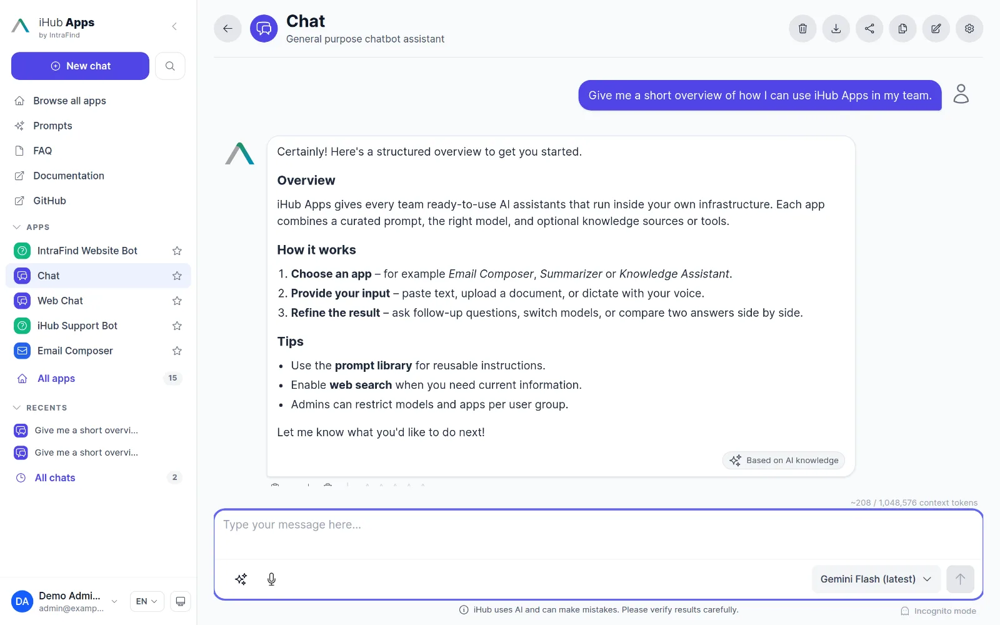
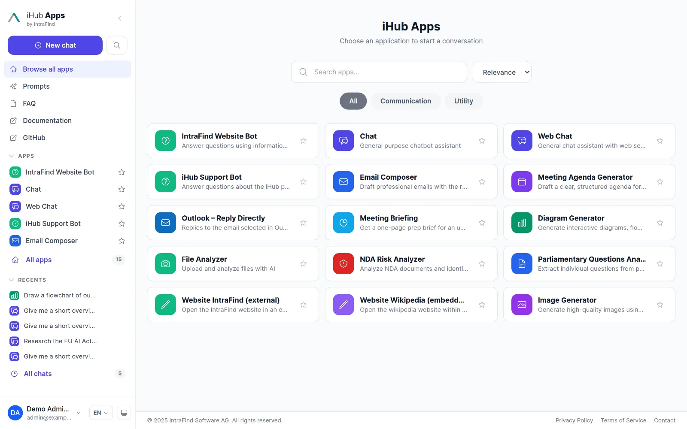
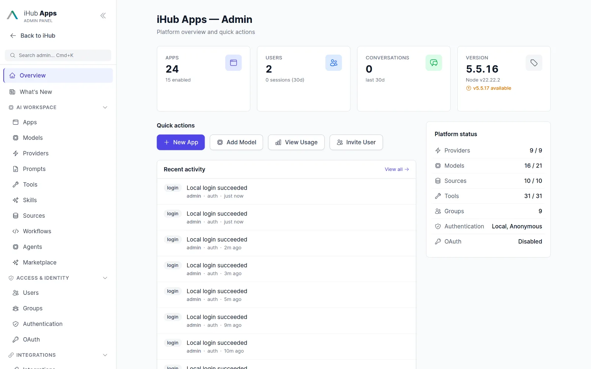
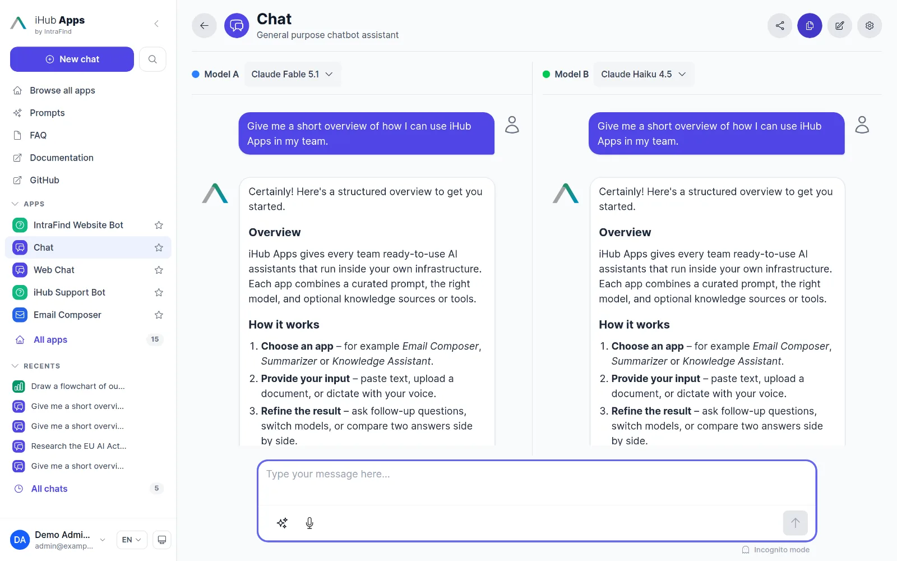
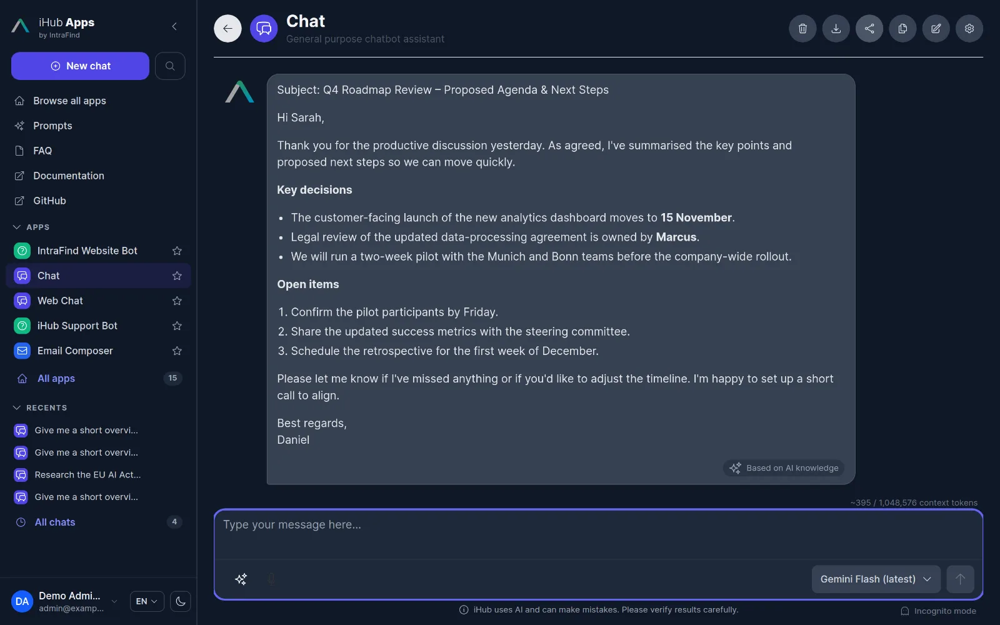
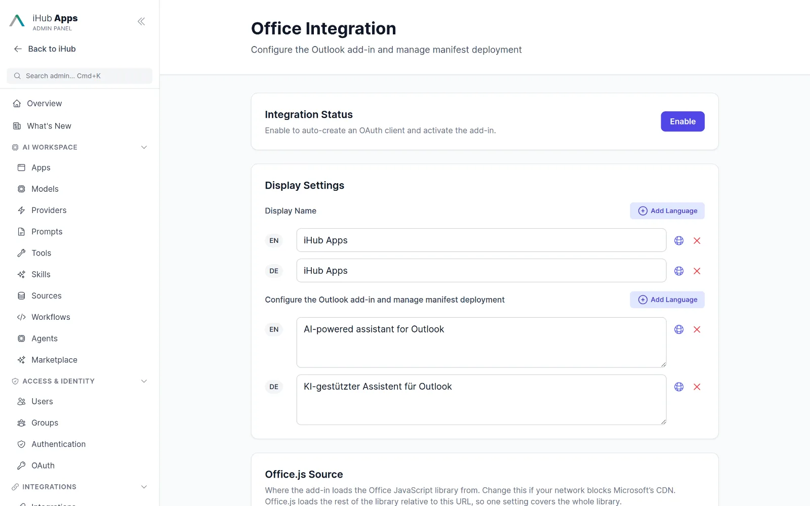
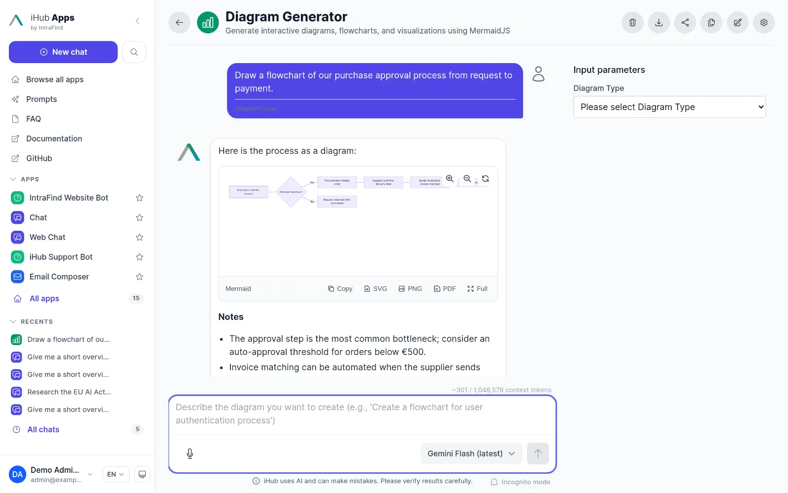

The platform for AI adoption you can run yourself.
iHub Apps rolls out AI across your entire organization in a safe and flexible way: 24 ready-made apps, every major model, workflows and agents, and full control over where your data lives.
Free and open source. No account, no credit card, no data leaving your network.

Everything a company needs to adopt AI, in one deployable package.
Numbers from the iHub Apps 5.5.16 source tree.
The essential AI stack for your company.
Simple for business users. Ready for advanced use cases. Governed by IT.
Chat
Model agnostic. For everyone in the company, with files, voice, web search and citations.
Learn more →Apps
Ready-made assistants for recurring tasks: prompts, variables, knowledge and tools, rolled out per team.
Learn more →Workflows & AgentsPreview
Build multi-step automation with human approval, schedules and webhooks.
Learn more →Integrations
Outlook, browser extension, Nextcloud, Teams, Jira, iFinder, OpenAPI tools and MCP.
Learn more →API
OpenAI-compatible inference API, MCP gateway and a built-in OAuth 2.0 server.
Learn more →Models
OpenAI, Anthropic, Google, Mistral, AWS Bedrock, Azure and any local OpenAI-compatible server.
Learn more →One interface for every team.
Users pick an app, type or dictate, and get a governed answer. Admins decide which teams see which apps and models.
A catalogue of apps instead of a blank prompt.
Email Composer, Summarizer, Translator, Meeting Briefing, NDA Risk Analyzer, Diagram Generator, File Analyzer and more ship out of the box. Every app carries an expert prompt, so nobody needs prompting skills.
- Search, categories and favourites
- Starter prompts and input forms per app
- Rolled out per group, including LDAP and OIDC groups

Automation with a human in the loop.
Design multi-step workflows on a visual canvas: AI steps, decisions, loops, parallel branches, HTTP calls, code and approval checkpoints. Trigger them manually, on a schedule or via webhook.
- 26 node types, draft and published versions
- Run history, crash-resume, export
- Autonomous agents with memory, inboxes and budgets

Central governance and admin controls.
One admin panel for apps, models, providers, prompts, tools, skills, sources, users, groups, authentication, integrations, usage and audit. Every change is versioned with a before/after diff.
- Hierarchical groups with external mappings
- Audit log, usage reports, telemetry
- Backup, restore and self-update

The all-in-one platform to adopt AI as an organization.
Model agnostic
No vendor lock-in. Switch between GPT, Claude, Gemini, Mistral, Bedrock or a local vLLM per app, per group or per chat.
Security first
Runs inside your network. OIDC, LDAP, NTLM and proxy authentication; secrets encrypted at rest; rate limiting and SSRF guards.
Customizable
Your logo, colours, pages and disclaimers. Custom React renderers for structured answers. English and German out of the box.
Enterprise ready
Group-based permissions, audit log, usage reports, OpenTelemetry, change history and in-product release notes.
Deployable anywhere
Single binary, Docker image, npm, Windows service. Laptop, data centre, private cloud or air-gapped.
Interoperability built in
OpenAI-compatible API, MCP in both directions, OpenAPI tool import, OAuth 2.0 server, experimental A2A.
Works the way your people already work.
Compare models side by sidePreview
Send one prompt to two models and see the answers next to each other before you standardize on one.

Dark mode and mobile
A responsive React interface with light, dark and system themes, installable as a PWA.

Outlook, browser and Nextcloud
Reply to the open email, send the current web page to an app, or chat with a file inside Nextcloud.

Diagrams, documents and structured output
Mermaid diagrams with SVG, PNG and PDF export, a document canvas, and JSON schemas rendered by custom components.

From download to first answer in three steps.
Install
Download the standalone binary for Linux, macOS or Windows, or pull the Docker image.
curl -fsSL https://raw.githubusercontent.com/intrafind/ihub-apps/main/install.sh | shConnect a model
Open http://localhost:3000, log in as the default admin and add an API key, or point iHub at your local vLLM or LM Studio.
Settings → Models → Add API keyRoll out
Enable the apps your teams need, map your directory groups, and share the link. Everything else is configured in the admin UI.
Admin → Groups → map "Employees" → apps: *Guiding you step by step.
Learn how iHub Apps fits your organization.
Core concepts
Providers, models, apps, skills, sources, tools, prompts and groups: when to use which.
Read the guide →Enterprise deployment
Reverse proxies, SSL, multi-worker scaling, Windows service, multi-server setups.
See deployment options →What shipped recently
Every release adds features, fixes and the occasional breaking change. The changelog is also inside the product.
Open changelog →Run iHub Apps in 60 seconds.
One command installs the standalone binary. No Node.js, no Docker, no database. Open http://localhost:3000, add a model key, and your team has 24 AI apps.
curl -fsSL https://raw.githubusercontent.com/intrafind/ihub-apps/main/install.sh | sh